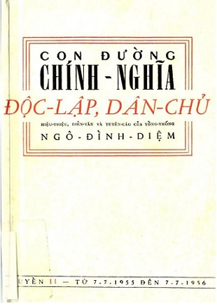

« Back
Con Đường Chính Nghĩa Độc Lập, Dân Chủ
By Tổng Thống Ngô Đình Diệm

Mục Lục
I- CHÍNH TRỊ TỔNG QUÁT
I- CHÍNH TRỊ TỔNG QUÁT (2)
II - NGOẠI GIAO
II - NGOẠI GIAO (2)
II - NGOẠI GIAO (3)
III - NỘI TRỊ
III - NỘI TRỊ (2)
III - NỘI TRỊ (3)
III - NỘI TRỊ (4)
III - NỘI TRỊ (4)
III - NỘI TRỊ (5)
III - NỘI TRỊ (6)
IV - QUÂN SỰ
IV - QUÂN SỰ (2)
V - DI CƯ
VI - KINH TẾ-CANH NÔNG CẢI CÁCH ĐIỀN ĐỊA
VI - KINH TẾ-CANH NÔNG CẢI CÁCH ĐIỀN ĐỊA
VII - Y TẾ-XÃ HỘI-LAO ĐỘNG
VII - Y TẾ-XÃ HỘI-LAO ĐỘNG (2)
VIII - GIÁO DỤC-VĂN HÓA
VIII - GIÁO DỤC-VĂN HÓA (2)
VIII - GIÁO DỤC-VĂN HÓA (3)
IX - THANH NIÊN-HỌC SINH
IX - THANH NIÊN-HỌC SINH (2)
X - HAI NĂM CHẤP CHÁNH
X - HAI NĂM CHẤP CHÁNH